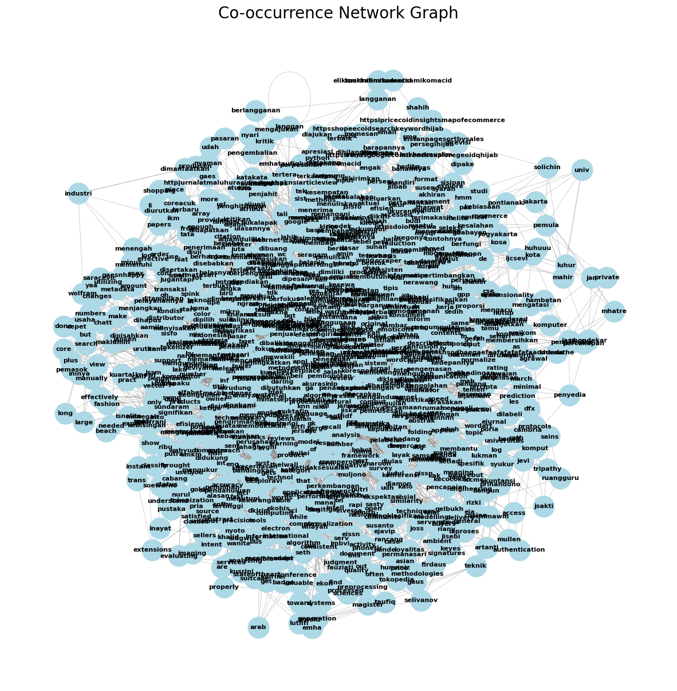
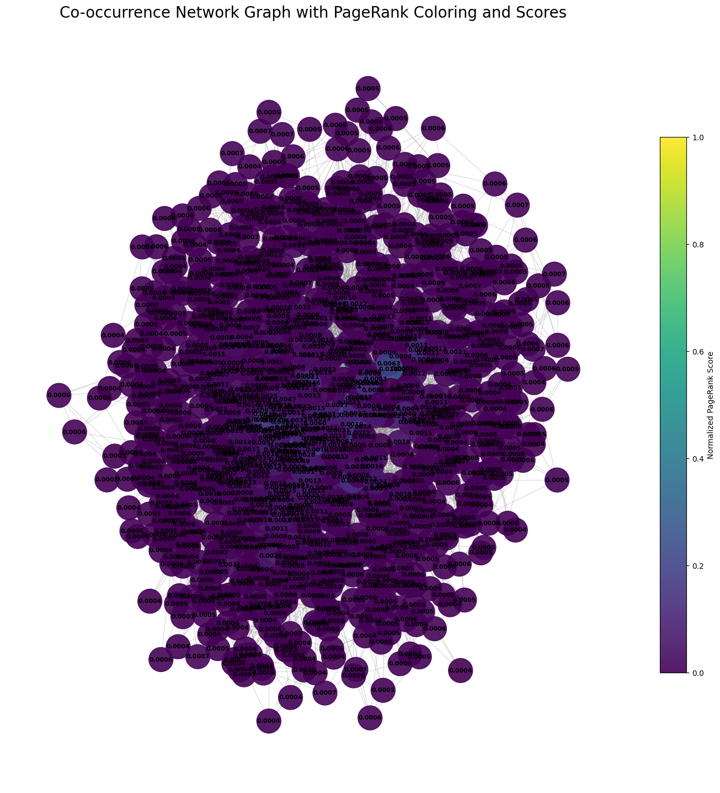
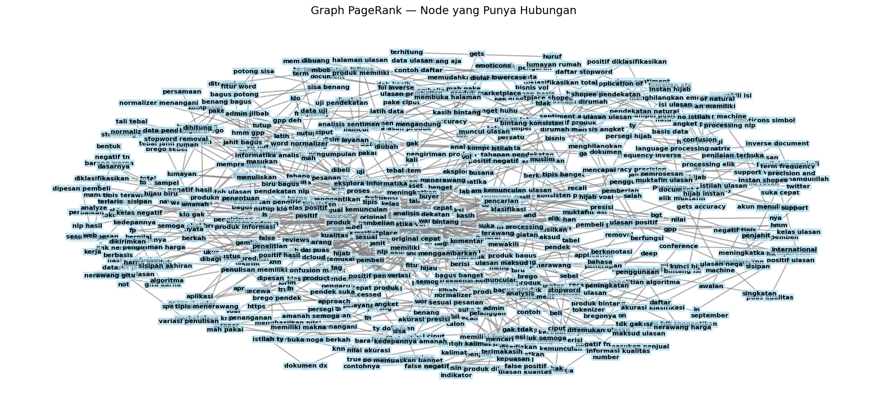
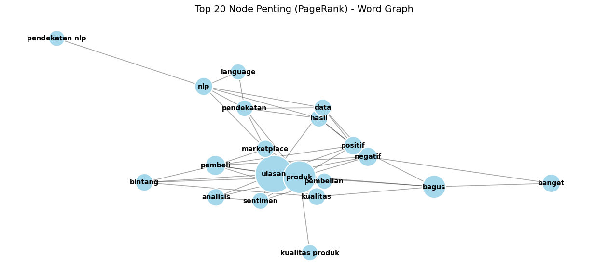

pip install --upgrade pymupdf
Requirement already satisfied: pymupdf in /usr/local/python/3.12.1/lib/python3.12/site-packages (1.26.7)
[notice] A new release of pip is available: 25.1.1 -> 25.3
[notice] To update, run: python3 -m pip install --upgrade pip
Note: you may need to restart the kernel to use updated packages.
import pymupdf
doc = pymupdf.open("jurnal.pdf") # open a document
out = open("output.txt", "wb") # create a text output
for page in doc: # iterate the document pages
text = page.get_text().encode("utf8") # get plain text (is in UTF-8)
out.write(text) # write text of page
out.write(bytes((12,))) # write page delimiter (form feed 0x0C)
out.close()
%%capture
!pip install nltk
import nltk
nltk.download('punkt') # hanya perlu sekali
nltk.download('punkt_tab') # opsional, untuk versi terbaru NLTK (≥3.8.2)
[nltk_data] Downloading package punkt to /home/codespace/nltk_data...
[nltk_data] Package punkt is already up-to-date!
[nltk_data] Downloading package punkt_tab to
[nltk_data] /home/codespace/nltk_data...
[nltk_data] Package punkt_tab is already up-to-date!
True
with open('output.txt', 'r', encoding='utf-8') as file:
teks = file.read()
print(teks[:200]) # tampilkan 200 karakter pertama
JURNAL EKSPLORA INFORMATIKA
◼ 32
p-ISSN: 2089-1814; e-ISSN: 2460-3694; DOI: 10.30864/eksplora.v10i1.390
Analisis Sentimen pada Ulasan Pembelian Produk di
Marketplace Shopee Menggunakan Pendekata
# Install: pip install nltk
import nltk
sentences = nltk.sent_tokenize(teks)
print(sentences)
['JURNAL EKSPLORA INFORMATIKA \n◼ 32 \n \np-ISSN: 2089-1814; e-ISSN: 2460-3694; DOI: 10.30864/eksplora.v10i1.390 \nAnalisis Sentimen pada Ulasan Pembelian Produk di \nMarketplace Shopee Menggunakan Pendekatan Natural \nLanguage Processing \n \n \nElik Hari Muktafin1, Kusrini2, Emha Taufiq Luthfi3 \nMagister Teknik Informatika \nUniversitas Amikom Yogyakarta \nYogyakarta, Indonesia \ne-mail: 1elik.muktafin@students.amikom.ac.id, 2kusrini@amikom.ac.id, 3emhataufiqluthfi@amikom.ac.id \n \nDiajukan: 1 Juli 2020; Direvisi: 7 Agustus 2020; Diterima: 15 Agustus 2020 \n \nAbstrak \nUlasan produk di marketplace merupakan informasi yang berharga apabila diolah dengan baik.', 'Penjual dapat melakukan analisis ulasan produk untuk mendapat informasi yang dapat digunakan dalam \nevaluasi produk dan layanan.', 'Kegiatan analisis ulasan produk tidak cukup dengan melihat jumlah bintang, \ndiperlukan melihat seluruh isi komentar ulasan untuk dapat mengetahui maksud dari ulasan.', 'Apabila \ndalam jumlah sedikit dapat dilakukan secara manual, namun dalam jumlah banyak lebih efektif \nmenggunakan sistem.', 'Dibutuhkan sistem yang mampu menganalisis banyak ulasan dengan efektif agar \nmemudahkan dalam memahami maksud ulasan.', 'Penelitian ini menggunakan algoritma KNN dan TF-IDF \ndengan pendekatan NLP untuk mengklasifikasikan ulasan produk “hijab instan” ke dalam 2 kelas (positif \ndan negatif).', 'Klasifikasi menggunakan pendekatan NLP mendapat akurasi sebesar 76,92%, presisi 80,00% \ndan recall 74,07%, sedangkan tanpa NLP hanya mendapat akurasi sebesar 69,23%, presisi 80,00% dan \nrecall 64,52%.', 'Kata yang sering muncul pada ulasan dapat menggambarkan penilaian pembeli secara \numum pada produk.', 'Pada ulasan positif menunjukkan pembeli puas terhadap kualitas, kecepatan \npengiriman dan harga barang, sedangkan pada ulasan negatif pembeli kecewa pada warna, dan jumlah \nbarang yang dikirim tidak sama dengan yang dipesan.', 'Kata kunci: Analisis sentimen, Ulasan produk, Marketplace, KNN, NLP.', 'Abstract \n Product reviews in the marketplace are valuable information if processed properly.', 'Sellers can \nanalyze product reviews to get information that can be used in evaluating products and services.', 'The \nactivity of analyzing product reviews is not enough to look at the number of stars, it is necessary to see the \nentire contents of the review comments to be able to find out the meaning of the review.', 'If a small amount \nis done manually, but in large numbers it is more effective to use the system.', 'A system that is able to analyze \nreviews effectively is needed to make it easier to understand the intent of reviews.', 'This study uses the KNN \nand TF-IDF algorithm with the NLP approach to classify "instant hijab" product reviews into 2 classes \n(positive and negative).', 'Classification using the NLP approach gets 76.92% accuracy, 80,00% precision \nand 74,07% recall, while without NLP it only gets 69.23% accuracy, 80,00% precision and 64,52% recall.', "Words that often appear on reviews can describe the general buyer's judgment on the product.", 'The positive \nreviews show the buyer is satisfied with the quality, speed of delivery and the price of the goods, while the \nnegative reviews the buyer is disappointed in the color, and the number of items sent is not the same as \nordered.', 'Keywords: Sentiment analysis, Product reviews, Marketplace, KNN, NLP.', '1.', 'Pendahuluan \nMarketplace merupakan perkembangan dari e-commerce sebagai media daring berbasis internet \nuntuk tempat melakukan kegiatan bisnis dan transaksi antara pembeli dan penjual [1].', 'Pada marketplace \npembeli dapat mencari barang yang ingin di beli dari banyak penjual atau toko.', 'Berdasarkan data Peta \nE‑Commerce Indonesia yang dikeluarkan oleh iPrice, Shopee adalah marketplace dengan jumlah \npengunjung terbanyak di Indonesia pada kuartal pertama tahun 2020 dengan jumlah pengunjung per bulan \nbrought to you by \nCORE\nView metadata, citation and similar papers at core.ac.uk\nprovided by Jurnal Eksplora Informatika\n\x0c◼ 33 \n \nAnalisis Sentimen pada Ulasan Pembelian Produk di Marketplace Shopee Menggunakan Pendekatan \nNatural Language Processing (Elik Hari Muktafin) \nmencapai 71 juta pengunjung [2].', 'Kondisi ini dimanfaatkan oleh produsen, Industri Kecil Menengah \n(IKM), Usaha Mikro Kecil Menegah (UMKM), pemasok, maupun distributor untuk menjangkau calon \npembeli yang membutuhkan produknya.', 'Salah satu produk yang banyak dijual di Shopee adalah produk \nbusana muslim.', 'Kualitas produk busana muslim selain dapat dilihat dari foto dan deskripsi produk yang \ntertera, dapat pula dilihat dari ulasan produk dari pembeli sebelumnya.', 'Ulasan produk merupakan salah \nsatu sumber informasi tentang kualitas produk dan sangat berpengaruh pada konsumen [3].', 'Dalam kegiatan pembelian barang di marketplace, pembeli dapat memberikan ulasan setelah menerima \nbarang yang dibeli.', 'Ulasan pembelian produk terdiri dari bintang dan isi komentar ulasan yang berisi tanggapan, \napresiasi maupun kritik dan masukan pada produk yang telah dibeli tersebut [4].', 'Semakin banyak jumlah \nbintang yang dimiliki, maka semakin baik pula reputasi yang dimiliki produk tersebut [5].', 'Ulasan pembelian \nproduk memiliki pengaruh yang signifikan terhadap minat beli dari pembeli lain [6].', 'Ulasan pembelian produk \ndapat digunakan oleh penjual untuk mendapat informasi untuk bahan perbaikan pada produk dan layanan \nsehingga tercipta kepuasan pelanggan.', 'Kepuasan pelanggan merupakan hal penting yang menjadi tujuan \nperusahaan [7].', 'Analisis ulasan secara mudah dapat dilakukan dengan melihat jumlah bintang yang diberikan oleh \npembeli, tetapi jumlah bintang tidak dapat mewakili isi dari keseluruhan ulasan.', 'Diperlukan melihat seluruh \nisi komentar ulasan untuk dapat mengetahui keseluruhan maksud ulasan.', 'Sangat dimungkinkan untuk \nmenganalisis ulasan secara manual dengan melihat satu persatu, namun apabila ulasan yang dimiliki banyak \nakan lebih cepat menggunakan sistem analisis sentimen [8].', 'Pada penelitian ini peneliti melakukan analisis sentimen pada ulasan produk di marketplace \nShopee.', 'Bagian ulasan produk terdiri dari isi komentar dengan format teks bebas dan peringkat jumlah \nbintang dari 1 sampai 5 [9].', 'Isi komentar ulasan digunakan untuk mengetahui informasi yang menjadi fokus \npembeli dalam memberikan ulasan.', 'Isi komentar ulasan dapat berisi lebih dari satu penilaian atribut produk, \nsedangkan setiap ulasan hanya memiliki satu penilaian jumlah bintang, sehingga jumlah bintang tidak dapat \nmewakili setiap fitur produk yang dinilai oleh pembeli [9].', 'Informasi yang disampaikan pembeli dapat \nmerujuk pada fitur produk seperti harga, kualitas, bahan, warna, bentuk, ukuran, rasa, jumlah, maupun pada \npelayanan yang diberikan seperti pengemasan, lama pengiriman, dan tanggapan penjual.', 'Beberapa penelitian sebelumnya mengatakan bahwa ulasan produk memiliki pengaruh positif \npada niat pembelian, sering kali calon pembeli mempertimbangkan faktor ulasan untuk meyakinkan \nkualitas produk yang akan dibeli [10].', 'Penelitian tentang sentimen analisis pada ulasan produk sudah pernah \ndilakukan oleh peneliti sebelumnya.', 'Penelitian oleh Lutfi dan Permatasari [11] menganalisis ulasan produk \ndi marketplace Bukalapak untuk mengetahui sentimen ulasan pengguna bernilai positif atau negatif dengan \npendekatan memanfaatkan Support Vector Machine dengan akurasi 93,42%.', 'Pada penelitian yang \ndilakukan Muljono dan Dian [12], mempresentasikan analisis sentimen terhadap data opini di Twitter pada \npelayanan situs marketplace di Indonesia menggunakan algoritma Naive Bayes dengan hasil akurasi sebesar \n93.33%.', 'Pada penelitian lain oleh Norman Kendal [13] menunjukkan penggunaan Natural Language \nProcessing (NLP) dapat diterapkan secara efektif ke pasar produk busana secara daring untuk memprediksi \nkategori atau sub kategori produk dari judul produk.', 'Tujuan dari penelitian ini adalah menganalisis sentimen ulasan pembelian produk pada produk \n“hijab instan” di Shopee menggunakan algoritma KNN dengan pembobotan TF-IDF dan diklasifikasi ke \ndalam 2 kelas (positif dan negatif).', 'Kemudian dibandingkan tingkat keberhasilan klasifikasi antara data \nyang melalui pra-pemrosesan dengan dan tanpa pendekatan NLP.', 'Tujuan lain dari penelitian ini adalah \nuntuk mengetahui fitur apa yang menjadi fokus ulasan positif dan negatif pada produk hijab instan, sehingga \npenjual dapat melakukan perbaikan dan peningkatan kualitas produk dan layanan secara tepat.', 'Permasalahan dalam menganalisis ulasan pembelian produk di marketplace adalah banyaknya penggunaan \nsingkatan dan bahasa yang tidak baku sehingga sulit dimengerti oleh sistem.', 'Oleh karena itu, pendekatan \nNatural Language Processing (NLP) diperlukan untuk memperbaiki bahasa pada isi komentar ulasan \nsehingga mencapai kinerja maksimal dalam analisis sentimen [14].', 'Tanpa NLP, Machine Learning tidak \ndapat membuat kemajuan yang berarti [15].', '2.', 'Metode Penelitian \nAlur penelitian dalam analisis sentimen ulasan pembelian produk di Shopee menggunakan \npendekatan Natural Language Processing (NLP) terdiri dari beberapa tahapan seperti yang ditunjukkan \npada Gambar 1.', 'Tahapan awal penelitian ini dimulai dengan penentuan produk yang akan dianalisis, lalu \ndilanjutkan dengan pengumpulan data ulasan produk.', 'Dilakukan pra-pemrosesan pada ulasan yang sudah \nterkumpul dengan dan tanpa pendekatan NLP sehingga menghasilkan 2 dataset, dengan pendekatan NLP \ndan dataset tanpa pendekatan NLP.', 'Setiap dataset dibagi menjadi data latih dan data uji, kemudian \n\x0c◼ 34 \n \nJurnal Eksplora Informatika Vol.', '10, No.', '1, September 2020. \n \nditerapkan perhitungan pembobotan TF-IDF pada kedua dataset untuk dibandingkan hasil keduanya dan \ndilakukan analisis hasil.', 'Gambar 1.', 'Alur penelitian \n \nPada tahapan penentuan produk, produk yang digunakan dalam penelitian ini adalah 120 produk \nterlaris di Shopee berdasarkan hasil pencarian produk dengan kata kunci “hijab instan”.', 'Produk dipilih \nberdasarkan urutan jumlah penjualan produk tanpa melihat asal toko dan asal wilayah.', 'Alasan pemilihan \nkata kunci “hijab instan” yaitu: 1) Memiliki jumlah pencarian lebih tinggi dibanding tipe hijab lainnya \nmenurut Google Trends per April 2020 [16]; 2) Memiliki penjualan yang tinggi di Shopee dengan penjualan \ntertinggi mencapai 48 ribu produk per bulan dari satu produk [17]; 3) Tipe hijab instan memiliki fitur yang \nkompleks mulai dari model, bahan, warna, ukuran, potongan, dan jahitan.', 'Tahapan pengumpulan data ulasan dilakukan dengan menggunakan aplikasi Scraper yang dibuat \nsecara mandiri menggunakan bahasa Python.', 'Setiap produk diambil 6 ulasan dari halaman pertama pada \nulasan bintang 1 sampai ulasan bintang 5, sehingga menghasilkan total 3.341 ulasan.', 'Gambar 2.', 'Proses pengambilan komentar menggunakan aplikasi Scraper.', 'Alur kerja sistem aplikasi Scraper ditunjukkan pada Gambar 2.', 'Proses dimulai dengan mengakses \nURL produk dan membuka halaman ulasan dengan jumlah bintang 1, kemudian mengunduh satu persatu \nulasan produk yang muncul dan disimpan ke basis data.', 'Apabila semua ulasan dengan jumlah bintang 1 \ntelah diunduh, aplikasi Scraper akan membuka halaman ulasan dengan jumlah bintang 2 dan seterusnya \nhingga mencapai halaman ulasan dengan jumlah bintang 5.', '◼ 35 \n \nAnalisis Sentimen pada Ulasan Pembelian Produk di Marketplace Shopee Menggunakan Pendekatan \nNatural Language Processing (Elik Hari Muktafin) \nUlasan pembelian produk disimpan dalam basis data MySQL agar mudah dikelola [18].', 'Dari 3.341 \nulasan yang didapat, dipilih ulasan dengan kriteria berikut: \n1.', 'Setiap produk diambil maksimal 1 ulasan pada setiap jumlah bintang yang memenuhi kriteria \ndan diurutkan berdasarkan ulasan terbaru.', '2.', 'Ulasan dengan panjang kurang dari 100 karakter tidak digunakan.', '3.', 'Ulasan yang digunakan hanyalah ulasan yang memiliki tag.', '4.', 'Ulasan yang hanya berisi emoticons atau simbol tidak digunakan.', '5.', 'Ulasan yang hanya berisi satu kata yang sama tidak digunakan, contohnya “mantul mantul \nmantul mantul mantul mantul mantul mantul mantul”.', '6.', 'Ulasan yang tidak terdapat dalam kosa kata bahasa Indonesia tidak digunakan, contohnya \n“urkbroekheueofnfbsheowmshsodbaegaefeafafafafafaadadada” \nSeleksi ulasan menghasilkan 260 ulasan yang layak sebagai dataset.', 'Dataset dilabeli secara \nmanual oleh 5 koresponden, terdiri dari 3 koresponden dari pembeli atau pengguna Shopee yang memiliki \npengalaman dalam membeli produk di Shopee dan 2 koresponden adalah penjual di Shopee.', 'Dataset diberi \nlabel dalam 2 kelas, ulasan positif dan negatif untuk setiap produk.', 'Dataset kemudian melalui proses pra-pemrosesan untuk membersihkan dan menyiapkan data \nsehingga siap dianalisis [19].', 'Pra-pemrosesan dilakukan dalam 2 keadaan, yang pertama pra-pemrosesan \ntanpa pendekatan NLP yang terdiri dari tahapan menghilangkan emoticons dan simbol, lowercase folding, \ndan penanganan tag.', 'Yang kedua pra-pemrosesan dengan pendekatan Natural Language Processing (NLP) \ndengan tujuan untuk memperbaiki bahasa yang ada pada ulasan, karena pada ulasan ditemukan banyak \npenggunaan kata yang tidak baku dan singkatan.', 'Natural Language Processing (NLP) merupakan salah \nsatu cabang ilmu Kecerdasan Buatan yang berfokus pada pengolahan bahasa natural yang dapat digunakan \nuntuk mengatasi hambatan pengenalan bahasa percakapan sehari hari oleh sistem komputer.', 'Gambar 3.', 'Tahap pra-pemrosesan menggunakan pendekatan NLP.', 'Alur kerja tahapan pra-pemrosesan dengan pendekatan NLP ditunjukkan pada Gambar 3, dengan \npenjelasan setiap tahapannya sebagai berikut: \na. Menghilangkan emoticons dan simbol \n \nPada penelitian ini emoticons dan simbol yang ada pada ulasan dibuang karena penelitian ini hanya \nberfokus pada teks yang terkandung dalam ulasan.', 'Simbol yang dibuang adalah “ ~”, “ `”, “ !”, “ $”, \n“ %”,” ^”, “ &”, “ *”, “ (“, “ )”,” _”,” –“, “ +”, “ =”, “ :”, “ “”, “ ‘”,” <”, “ >”, “koma”, ” \ntitik”, “ ?”, “ /”, “ \\”, “ #”, dan “ |”.', 'Ulasan yang mengandung simbol seperti “memuaskan banget \nkak : )” setelah diproses maka menjadi “memuaskan banget kak”.', 'b. Lowercase folding \n \nLowercase folding adalah mengubah semua huruf menjadi huruf kecil agar terhitung sebagai kata yang \nsama [20].', 'Komentar ” Bagus banget sesuai pesanan” menjadi “bagus banget sesuai pesanan”, huruf \n“B” kapital diubah menjadi ”b” huruf kecil.', 'c. Penanganan tag \n \nTag ulasan adalah potongan informasi yang telah disediakan Shopee dan dapat disertakan pada ulasan \npembelian produk.', 'Tidak semua ulasan mengandung tag, sehingga perlu dilakukan penanganan khusus \npada ulasan yang mempunyai tag.', 'Tag pada ulasan ditambahkan menjadi bagian dari isi komentar \nulasan.', 'Contoh tag yang disediakan Shopee seperti “Kecepatan pengiriman sangat baik”, “Respon \npenjual sangat baik".', 'd. Word Normalizer \n \nWord Normalizer digunakan untuk memperbaiki kata-kata dalam ulasan sehingga menghasilkan \nkalimat yang baik dan benar sesuai dengan aturan tata bahasa Indonesia.', 'Peningkatan ini diperlukan \nuntuk memudahkan pembaca memahami makna kalimat [1].', 'Komentar “barangnya bagus bgt” maka \nsetelah proses Word Normalizer menjadi “barangnya bagus banget”.', 'Kata “bgt” diubah menjadi \n“banget” sehingga lebih mudah dipahami.', '◼ 36 \n \nJurnal Eksplora Informatika Vol.', '10, No.', '1, September 2020. \n \ne. Stemming \n \nStemming berfungsi untuk membuat suatu kata menjadi kata dasar, dengan menghilangkan semua \nimbuhan yang ada pada kata tersebut [21].', 'Sebagai contoh kalimat “bahannya halus dan tidak membuat \nkegerahan” kemudian diubah menjadi “bahan halus dan tidak buat gerah” \nf. Stopword Removal \n \nStopword removal berfungsi untuk menghilangkan kata-kata yang mempunyai jumlah kemunculan \nbanyak tapi tidak terlalu penting [22].', 'Kata yang masuk stopword seperti “yang”, “dan”, “di”, “dari” \nsehingga menyisakan kata-kata yang penting.', 'Sebagai contoh kalimat “barang yang warna hijau dan \nbiru bagus” kemudian diubah menjadi “barang warna hijau biru bagus”.', 'g. Tokenizer \n \nTokenizer berfungsi untuk membagi teks input menjadi array token, karakter yang digunakan dalam \nbahasa Indonesia adalah alfabet dan setiap token dipisahkan oleh spasi.', 'Sebagai contoh kalimat \n“barangnya bagus banget” kemudian diubah menjadi “barangnya”, “bagus”, “banget”.', 'Dataset yang telah melalui tahapan pra-pemrosesan dengan dan tanpa pendekatan NLP, dibagi \nmenjadi 2 bagian dengan komposisi 208 data latih dan 52 data uji.', 'Kemudian diterapkan pembobotan \ndengan algoritma Term Frequency Inverse Document Frequency (TF-IDF).', 'TF-IDF digunakan untuk \nmemberikan pembobotan hubungan suatu kata atau istilah terhadap keseluruhan ulasan.', 'Frekuensi \nkemunculan kata di dalam ulasan menunjukkan seberapa penting kata itu di dalam ulasan tersebut, dan \nulasan mana yang memiliki kata tersebut sehingga ulasan dapat diklasifikasikan ke dalam 2 kelas (ulasan \npositif dan ulasan negatif) [23].', 'Perhitungan TF-IDF menggunakan Persamaan 1.', '𝑊𝑥,𝑦= 𝑡𝑓𝑥,𝑦 × log (\n𝑁\n𝑑𝑓𝑥) \n(1) \n \nDi mana 𝑊𝑥,𝑦 adalah bobot istilah (ty) terhadap dokumen (dx).', 'Sedangkan 𝑡𝑓𝑥,𝑦 adalah jumlah \nkemunculan istilah (ty) dalam dokumen (dx).', 'N adalah jumlah semua dokumen yang ada dalam dataset dan \ndfx adalah jumlah dokumen yang mengandung istilah (ty), minimal ada satu kata yaitu istilah (ty).', '3.', 'Hasil dan Pembahasan \n3.1.', 'Daftar Ulasan Produk Shopee \nUlasan yang digunakan didapatkan dari kegiatan pencarian ulasan produk pada bulan April 2020 \ndi Shopee.', 'Ulasan diambil dari produk terlaris dengan pencarian menggunakan kata kunci “hijab instan”.', 'Contoh ulasan yang digunakan ditunjukkan pada Tabel 1.', 'Tabel 1.', 'Contoh ulasan produk.', 'No \nAkun \nIsi Ulasan \nTag Ulasan \nBintang \nLabel \n1 \nw*****c \nAlhamdulillah owner nya baik, yaa walaupun aku chatt \nagak lama balasnya saya juga maklumin karena yang beli \njuga bukan aku aja toh.\\nAku order 100 piece yang \ndatang cuma 97 dan Alhamdulillah nya begitu \nmengajukan pengembalian dana langsung diBALIKIN \nKualitas produk sangat \nbaik.', '5/5 \nPositif \n2 \nnasrul8623 \nUkuran nya kok tidak sama ya.', 'Ada yang kecil ada yang \npas.', 'Hmm gpp deh tak kasih bintang 4 aja ya soallnya \nmasih belum konsisten dengan produknya.', 'Kualitas produk baik.', '4/5 \nNegatif \n3 \nd*****e \nTipis banget ternyata huhuuu sedih tapi ya lumayan aja \nlah buat dirumah sehari2 mah harus pake ciput yg nutup \nklo gak nerawang gitu mungkin karna harganya \njuga..\\nTapi emg pengirimannya termasuk cepet sih \nini..\\nya plus minus gitu gaes..\\nHappy shopping gaes.. \nKualitas \nproduk \nstandar.', 'Harga produk \nstandar.', '3/5 \nNegatif \n4 \nn*****r \nuntuk warna mocca, hitam, maroon udh bener dkirim \nbergo meskipun jahitannya ga rapi samsek.', 'tapi yg navy \nkenapa yg dikirim bkn bergo malah kerudung segitiga \nsih.', 'ini beli barengan sm temen2.', 'pada nyalahin yg beli \nnavy karna yg dtg bukan bergo \nKualitas produk kurang \nbaik.', '2/5 \nNegatif \n5 \naiiunii05 \nBelanja ke dua dan alhamdulillah puas lagi, pertahankan \nkualitas nya ya semoga berkah toko nya dan laku, aamiin \nsuka banget sama kerudung nya dan bahan nya nyaman, \nsecara nyari di pasaran udah banyak yg jual tapi bahan \nnya jersey kebanyakan dan kurang suka jersey, kalo ini \ndiamon jadi enak pake nya \nKualitas produk sangat \nbaik.', 'Produk original.', 'Harga produk sangat \nbaik.', 'Kecepatan \npengiriman sangat baik.', '5/5 \nPositif \n \n\x0c◼ 37 \n \nAnalisis Sentimen pada Ulasan Pembelian Produk di Marketplace Shopee Menggunakan Pendekatan \nNatural Language Processing (Elik Hari Muktafin) \nPada Tabel 1, akun w*****c menuliskan ulasan tentang layanan perpesanan dan jumlah barang \nyang dikirim tidak sesuai, tetapi memberikan tag ulasan kualitas produk sangat baik dengan jumlah bintang \n5/5 dan diberikan label positif.', 'Akun nasrul8623 menuliskan ulasan tentang ukuran yang tidak sesuai dan \nmemberi tag kualitas produk baik dengan jumlah bintang 4/5 dan diberikan label negatif.', 'Bisa disimpulkan \nbahwa jumlah bintang pada ulasan tidak selalu mewakili isi ulasan.', 'Ulasan dengan jumlah bintang 5/5 tidak \nmenjamin pembeli puas pada semua fitur barang dan pelayanan yang didapat.', 'Fitur tag pada ulasan \nmembantu pembeli untuk lebih spesifik menyebut fitur apa saja yang diulas.', 'Informasi dari ulasan ini dapat \ndiolah untuk menjadi perbaikan oleh penjual ke depan.', '3.2.', 'Analisis Ulasan \nUlasan yang digunakan sebanyak 260 ulasan, yang telah diberi label oleh 5 koresponden dan \nmenghasilkan 129 ulasan positif dan 131 ulasan negatif.', 'Ulasan dijadikan dataset dengan komposisi 208 \ndata latih dan 52 data uji, kemudian dilakukan pra-pemrosesan dengan pendekatan NLP.', 'Pada tahap pra-\npemrosesan diterapkan fitur word normalizer, stemming, dan stopword removal untuk setiap ulasan.', 'Word normalizer untuk menangani variasi penulisan kata yang memiliki makna yang sama agar \nterhitung sebagai istilah tunggal [24].', 'Contoh variasi penulisan kata yang memiliki makna sama \nditunjukkan pada Tabel 2.', 'Tabel 2.', 'Variasi penulisan kata pada ulasan yang memiliki makna sama.', 'No \nIstilah pada ulasan \nWord normalizer \nJumlah ulasan \n1 \ntidak \ntidak \n40 \n2 \ntdk \ntidak \n11 \n3 \ngak \ntidak \n33 \n4 \ng \ntidak \n7 \n5 \ntdak \ntidak \n1 \n6 \nga \ntidak \n40 \n7 \ngk \ntidak \n10 \n8 \nbanget \nbanget \n28 \n9 \nbgt \nbanget \n12 \n10 \nbget \nbanget \n1 \n \nPada Tabel 2 menunjukkan variasi kata yang memiliki makna sama.', 'Kata “ga” ditemukan pada \n40 ulasan dan kata “gak” ditemukan pada 33 ulasan, digunakan oleh pembeli untuk menggantikan kata \n“tidak”.', 'Kata “bgt” ditemukan pada 12 ulasan dan kata “bget” ditemukan pada 1 ulasan yang digunakan \noleh pembeli untuk menggantikan kata “banget”.', 'Penggunaan word normalizer dapat menangani \nbanyaknya variasi kata yang digunakan pada penulisan ulasan oleh pembeli untuk diubah menjadi istilah \nyang sama.', 'Selanjutnya dilakukan proses stemming pada dataset, untuk menghilangkan awalan, sisipan dan \nakhiran kata sehingga menjadi bentuk dasarnya, dengan tujuan pengambilan informasi menjadi efisien dan \nefektif [25].', 'Contoh penerapan stemming ditunjukkan pada Tabel 3.', 'Tabel 3.', 'Hasil penerapan stemming.', 'No \nIstilah pada ulasan \nStemming \nJumlah ulasan \n1 \ndikirim \nkirim \n24 \n2 \ndikirimkan \nkirim \n1 \n3 \nlangganan \nlanggan \n26 \n4 \nberlangganan \nlanggan \n1 \n5 \njahitannya \njahit \n10 \n6 \ndijahit \njahit \n2 \n7 \npenjahit \njahit \n1 \n8 \npesanan \npesan \n23 \n9 \nmemesan \npesan \n1 \n10 \ndipesan \npesan \n1 \n \nPada Tabel 3 dapat dilihat kata-kata pada ulasan seperti “dikirim” dan “dikirimkan” apabila \ndihilangkan awalan, sisipan dan akhiran akan menjadi kata dasar “kirim”.', 'Begitu juga dengan kata \n“jahitannya”, “dijahit”, dan “penjahit” setalah melalui proses stemming menjadi kata dasar “jahit”.', 'Stemming membuat kata-kata pada ulasan menjadi bentuk dasarnya dan menjadi istilah yang sama.', 'Selanjutnya dilakukan proses stopword removal untuk menghilangkan stopword dari ulasan.', 'Daftar stopword yang digunakan dibuat sendiri mengacu pada konteks kata yang sering dipakai dalam \n\x0c◼ 38 \n \nJurnal Eksplora Informatika Vol.', '10, No.', '1, September 2020. \n \nulasan maupun dalam jual beli secara daring.', 'Contoh daftar stopword yang dipakai ditunjukkan pada Tabel \n4.', 'Tabel 4.', 'Contoh daftar stopword.', 'No \nStopword \nJumlah kemunculan \n1 \nyang \n214 \n2 \ndi \n104 \n3 \ntapi \n92 \n4 \ndan \n73 \n5 \nya \n62 \n6 \njuga \n61 \n7 \njadi \n34 \n8 \nuntuk \n32 \n9 \ndengan \n31 \n10 \nke \n22 \n \nDapat dilihat pada Tabel 4, kata “yang” merupakan salah satu daftar stopword yang paling banyak \nmuncul, yaitu sebanyak 214 kali, dan kata “di” yang muncul sebanyak 104 kali.', 'Selain dalam bentuk kata \nangka juga masuk ke dalam stopword, angka tidak berpengaruh pada analisis sentimen dan dapat dihapus, \nsehingga dapat mengurangi kebisingan dan meningkatkan efisiensi [26].', 'Hasil keseluruhan proses pra-\npemrosesan dapat dilihat pada Tabel 5.', 'Tabel 5.', 'Hasil pra-pemrosesan.', 'No \nUlasan Produk \nPra-pemrosesan \nLabel \nAktual \nWord Normalizer \nStemming \nStopword Removal \n1 \nMksh \nadmin, \njilbabny \nsudah \ndatang, \nbagus \nwalaupun agak tipis dan \nsedikit menerawang, tapi \nkalau dipake smg gak \nnerawang.', 'terimakasih \nadmin \njilbabnya \nsudah \ndatang \nbagus walaupun agak tipis \ndan sedikit menerawang \ntapi kalau dipakai semoga \ntidak menerawang \nterimakasih admin jilbab \nsudah \ndatang \nbagus \nwalaupun agak tipis dan \nsedikit \nterawang \ntapi \nkalau pakai moga tidak \nterawang \nterimakasih admin \njilbab \ndatang \nbagus \ntipis \nterawang dipakai \nterawang \nPositif \n2 \nKualitas \nproduk \nsangat \nbagus, \nproduk \noriginal, \nkecepatan produk sangat \nbaik, semoga kedepannya \nmakin baik dan amanah ya \nsemoga berkah amiiinnnn \nkualitas \nproduk \nsangat \nbagus \nproduk \noriginal \nkecepatan produk sangat \nbaik semoga kedepannya \nmakin baik dan amanah ya \nsemoga berkah amin \nkualitas produk sangat \nbagus produk original \ncepat produk sangat baik \nmoga depan makin baik \ndan amanah ya moga \nberkah amin \nkualitas \nproduk \nbagus \nproduk \noriginal \ncepat \nproduk baik baik \namanah berkah \nPositif \n3 \nBagus nih, bregonya depan \nbelakang panjang.', 'Paling \nsebel, \nbrego \nbiasanya \npendek diblakang, yg ini \nsuka bgt.', 'Talinya tebal.', 'Jahitannya bagus cuma msh \nharus \npotongin \nsisa2 \nbenang aja.', 'bagus ini bregonya depan \nbelakang panjang paling \nsebel \nbrego \nbiasanya \npendek di belakang yang ini \nsuka banget talinya tebal \njahitannya \nbagus \ncuma \nmasih harus memotong sisa \nbenang saja \nbagus ini brego depan \nbelakang panjang paling \nsebel brego biasa pendek \ndi belakang yang ini suka \nbanget tali tebal jahit \nbagus cuma masih harus \npotong sisa benang saja \nbagus brego sebel \nbrego \nsuka \ntali \ntebal jahit bagus \npotong sisa benang \nPositif \n4 \nUkurannya kok engak sama \nya.', 'Ada yang kecil ada yang \npas.', 'Hmm gpp deh tak kasih \nbintang 4 aja ya soalnya \nmasih \nbelum \nkonsisten \ndengan produknya.', 'ukurannya kok tidak sama \nya ada yang kecil ada yang \nsesuai tidak apa apa deh \ntidak kasih bintang saja ya \nsoalnya \nmasih \nbelum \nkonsisten \ndengan \nproduknya \nukur kok tidak sama ya \nada yang kecil ada yang \nsesuai tidak apa apa deh \ntidak kasih bintang saja \nya soal masih belum \nkonsisten dengan produk \nukur kecil sesuai \nkasih bintang soal \nbelum \nkonsisten \nproduk \nNegatif \n5 \nTipis banget ternyata huhu \nsedih tapi ya lumayan aja \nlah buat dirumah sehari2 \nmah harus pake ciput yg \nnutup klo gak nerawang \ngitu \nmungkin \nkarna \nharganya.', 'tipis banget ternyata huhu \nsedih tapi ya lumayan saja \nlah buat dirumah sehari \nmah harus pakai ciput yang \nmenutup \nkalau \ntidak \nnerawang begitu mungkin \nkarena harganya \ntipis banget nyata huhu \nsedih tapi ya lumayan \nsaja lah buat rumah hari \nmah harus pakai ciput \nyang tutup kalau tidak \nnerawang \nbegitu \nmungkin karena harga \ntipis nyata sedih \nlumayan \nrumah \nhari pakai ciput \ntutup \nnerawang \nharga \nNegatif \n \nPada Tabel 5 menunjukkan ulasan produk yang telah melewati pra-pemrosesan menggunakan \npendekatan NLP dengan fitur word normalize, stemming, dan stopword removal.', 'Salah satu indikator \nkepuasan pelanggan adalah pencapaian performa dari sebuah produk yang diterima oleh pelanggan sama \ndengan ekspektasi pelanggan itu sendiri [27].', 'Dilakukan pelanggan dengan memberikan ulasan \nmenggunakan kata berkonotasi positif, hal ini sesuai dengan hasil ulasan yang diberi label oleh koresponden \n\x0c◼ 39 \n \nAnalisis Sentimen pada Ulasan Pembelian Produk di Marketplace Shopee Menggunakan Pendekatan \nNatural Language Processing (Elik Hari Muktafin) \ndi mana ulasan terdapat kata “bagus”, “suka” dan “cepat”.', 'Sedangkan indikator pelanggan tidak puas \nadalah dengan memberikan ulasan dengan kata berkonotasi negatif, seperti kata “tidak”, “kecewa”, dan \n“tipis”.', 'Dalam ulasan nomor 1, walaupun berlabel positif tetapi pada isi ulasan terdapat kritikan untuk \npenjual yang menggambarkan bahan hijab dengan kata “tipis”.', 'Dari contoh ini dapat membuktikan bahwa \npemberian jumlah bintang tinggi tidak selalu menggambarkan apa yang dirasakan oleh pembeli.', 'Terkadang \nada pembeli yang kecewa pada satu fitur tapi puas pada fitur lainnya, ada pula pembeli yang kecewa tetapi \nmemberikan kesempatan perbaikan pada penjual dengan tetap memberi jumlah bintang tinggi.', '3.3.', 'Perhitungan KNN Menggunakan TF-IDF \nPenelitian ini menggunakan algoritma KNN dengan k=3 untuk melakukan klasifikasi ulasan.', 'Penggunaan KNN didukung TF-IDF untuk mengukur bobot atau tingkat pentingnya sebuah kata dalam \nulasan [28].', 'Perhitungan TF-IDF dilakukan pada 208 data latih dan 52 data uji dalam keadaan data sesudah \nmelalui pra-pemrosesan dengan dan tanpa pendekatan NLP.', 'Kemudian dihitung jumlah kecocokan hasil \npelabelan dari prediksi 52 data uji dibandingkan dengan pelabelan manual oleh koresponden menggunakan \nconfusion matrix.', 'Confusion matrix membagi keadaan menjadi; True Positif (TP) menunjukkan jumlah data \ndengan kelas positif dan hasil prediksi benar, True Negatif (TN) menunjukkan jumlah data dengan kelas \nnegatif dan hasil prediksi benar, False Positif (FP) menunjukkan jumlah data dengan kelas positif dan hasil \nprediksi salah dan False Negatif (FN) menunjukkan jumlah data dengan kelas negatif dan hasil prediksi \nsalah.', 'Hasil prediksi ditunjukkan pada Tabel 6.', 'Tabel 6.', 'Hasil confusion matrix data uji dengan dan tanpa pra-pemrosesan NLP.', 'Hasi Klasifikasi \nTanpa Pra-pemrosesan \nDengan Pra-pemrosesan \nTrue Positif (TP) \n20 \n20 \nTrue Negatif (TN) \n16 \n20 \nFalse Positif (FP) \n5 \n5 \nFalse Negatif (FN) \n11 \n7 \n \nHasil dari confusion matrix kemudian dilakukan perhitungan untuk mendapatkan nilai akurasi, \npresisi dan recall.', 'Akurasi adalah rasio antara sampel yang diklasifikasikan dengan benar dibandingkan \ndengan jumlah total sampel, akurasi dihitung menggunakan Persamaan 2.', 'Presisi adalah proporsi sampel \npositif yang diklasifikasikan dengan benar terhadap jumlah total sampel yang di prediksi positif, presisi \ndihitung menggunakan Persamaan 3.', 'Recall adalah sampel positif yang diklasifikasikan dengan benar ke \ntotal jumlah sampel positif, recall dihitung menggunakan Persamaan 4 [29].', '𝐴𝑘𝑢𝑟𝑎𝑠𝑖= \n𝑇𝑃+𝑇𝑁\n𝑇𝑃+𝐹𝑃+𝐹𝑁+𝑇𝑁 \n (2) \n \n \n𝑃𝑟𝑒𝑠𝑖𝑠𝑖= \n𝑇𝑃\n𝐹𝑃+𝑇𝑃 \n(3) \n \n \n𝑅𝑒𝑐𝑎𝑙𝑙= \n𝑇𝑃\n𝑇𝑃+𝐹𝑁 \n(4) \n \nPersamaan 2, 3 dan 4 diterapkan pada hasil pengujian dua keadaan data uji, yaitu tanpa pendekatan \nNLP dan dengan pendekatan NLP, didapat hasil perbandingan yang ditunjukkan pada Tabel 7.', 'Tabel 7.', 'Hasil pengujian dengan dan tanpa pra-pemrosesan NLP.', 'Hasil \nPengujian \nTanpa Pra-\npemrosesan \nDengan Pra-\npemrosesan \nAkurasi \n69,23% \n76,92% \nPresisi \n80,00% \n80,00% \nRecall \n64,52% \n74,07% \n \nHasil pengujian pada Tabel 7 menunjukkan bahwa klasifikasi melalui pra-pemrosesan tanpa \npendekatan NLP menunjukkan hasil akurasi 69.23% sedangkan klasifikasi melalui pra-pemrosesan dengan \npendekatan NLP menunjukkan peningkatan hasil akurasi menjadi 76,92%.', 'Presisi dari kedua data \nmenunjukkan hasil sama yaitu 80,00%.', 'Nilai recall data melalui pra-pemrosesan tanpa NLP menunjukkan \nhasil 64,52% dan melalui pra-pemrosesan dengan NLP menunjukkan peningkatan menjadi 74,07%.', 'Secara \nkeseluruhan hasil klasifikasi mengalami peningkatan pada data yang telah melalui tahap pra-pemrosesan \n\x0c◼ 40 \n \nJurnal Eksplora Informatika Vol.', '10, No.', '1, September 2020. \n \nmenggunakan pendekatan NLP.', 'Penerapan pra-pemrosesan dengan NLP memungkinkan mengubah kata \ntidak baku dan singkatan menjadi seragam, sehingga penerapan pembobotan kata dan penghitungan \nfrekuensi kemunculan kata yang sudah seragam dengan TF-IDF menjadi lebih efektif.', 'Penelitian sebelumnya [30] menggunakan algoritma KNN dan TF-IDF dalam mengklasifikasi \nsentimen pada media sosial Twitter memperoleh akurasi 67,2%.', 'Sedangkan pada penelitian ini memperoleh \nakurasi lebih tinggi yaitu 76,92%.', 'Nilai akurasi yang lebih rendah pada penelitian sebelumnya disebabkan \nkarena tidak menggunakan word normalizer sehingga penggunaan kata tidak baku dan kesalahan penulisan \nkata maupun singkatan pada kebiasaan pengguna Twitter tidak ditangani dengan baik.', 'Penelitian lainnya \n[31] tentang Deep Sentiment Analysis pada angket penilaian terbuka menggunakan KNN menghasilkan \npresisi 59,4%.', 'Pada penelitian ini menghasilkan presisi 80%, di mana sistem dapat memprediksi 40 ulasan \ndari 52 ulasan yang diuji.', '3.4.', 'Frekuensi Kemunculan Kata \nKata-kata yang mempunyai frekuensi kemunculan yang tinggi dalam ulasan dapat \nmenggambarkan keadaan penerimaan pasar secara umum pada produk.', 'Kata yang sering digunakan dalam \nmemberikan ulasan di Shopee pada produk “hijab instan” ditunjukkan dengan wordcloud yang dibuat \ndengan aplikasi Wordart pada Gambar 4 dan Gambar 5.', 'Gambar 4.', 'Wordcloud kemunculan kata pada ulasan positif.', 'Pada ulasan dengan label positif, kata yang memiliki frekuensi kemunculan lebih dari 50 kali \nadalah kata “bagus” 123 kali, kata “suka” 99 kali, kata “cepat” 68 kali, kata “banget” 56 kali, kata “harga” \n55 kali, dan kata “barang” 53 kali.', 'Penggunaan kata “bagus”, “barang”, “suka”, dan “banget” merujuk \npada kualitas produk yang diterima yang sesuai harapan pembeli.', 'Penggunaan kata “cepat” merujuk pada \nkecepatan pengiriman produk yang baik, sedangkan penggunaan kata “harga” merujuk pada penentuan \nharga yang baik untuk produk hijab instan dari sudut pandang pembeli.', 'Gambar 5.', 'Wordcloud kemunculan kata pada ulasan negatif.', 'Pada ulasan dengan label negatif, kata yang memiliki frekuensi kemunculan lebih dari 50 kali \nadalah kata “tidak” 168 kali, kata “warna” 67 kali, kata “kirim” 55 kali, kata “kecewa” 50 kali, dan kata \n“pesan” 55 kali.', 'Kata “tidak” dan “kecewa” menunjukkan pembeli menerima keadaan yang tidak cocok \ndengan harapannya, seperti kata “tidak” yang diikuti dengan kata “warna” yang merujuk pada warna dari \nproduk hijab instan yang diterima pembeli tidak sesuai.', 'Kata “tidak” yang diikuti kata “kirim” dan “pesan” \n\x0c◼ 41 \n \nAnalisis Sentimen pada Ulasan Pembelian Produk di Marketplace Shopee Menggunakan Pendekatan \nNatural Language Processing (Elik Hari Muktafin) \nmerujuk pada jumlah produk atau spesifikasi produk yang dikirim tidak sesuai dengan apa yang dipesan \noleh pembeli.', 'Dari frekuensi kata yang muncul pada ulasan positif dan ulasan negatif, dapat menggambarkan \nkeadaan pada segmentasi penjualan hijab instan di Shopee di mana sebagian pembeli merasa puas pada \nkualitas produk, kecepatan pengiriman produk dan harga produk.', 'Sedangkan sebagian pembeli merasa tidak \npuas pada warna produk dan jumlah pengiriman produk yang tidak sesuai dengan yang dipesan oleh \npembeli.', '4.', 'Kesimpulan \nUlasan produk pada marketplace Shopee dibutuhkan oleh calon pembeli untuk mencari informasi \ntentang kualitas produk yang akan dibeli, sekaligus sebagai masukan untuk penjual dalam meningkatkan \nkualitas produk dan pelayanan.', 'Pemberian bintang pada ulasan tidak selalu dapat menggambarkan isi dari \nulasan, hal ini dibuktikan adanya pemberian jumlah bintang yang tinggi, tetapi isi dari ulasannya bernilai \nnegatif.', 'Analisis sentimen pada isi ulasan produk dapat memberikan informasi yang lebih dalam tentang \npenilaian pembeli pada produk yang dijual di marketplace Shopee.', 'Penggunaan pendekatan NLP pada pra-pemrosesan data untuk meningkatkan akurasi klasifikasi \nsangat diperlukan.', 'Fitur Word Normalizer berfungi untuk memperbaiki bahasa yang tidak baku dan \nsingkatan yang digunakan dalam ulasan, seperti “tdk”, “gak”, “g”, “tdak”, “ga”, dan “gk” yang dapat \ndiseragamkan menjadi kata “tidak”.', 'Fitur Stemming dan Stopword removal juga dapat meningkatkan \nakurasi klasifikasi, terbukti dengan penerapan ketiga fitur tersebut, dapat menghasilkan nilai akurasi \nmenjadi 76,92%, presisi 80,00%, dan recall 74,07%, hasil ini lebih tinggi di bandingkan dengan klasifikasi \nyang tidak menggunakan fitur NLP yang hanya menghasilkan nilai akurasi sebesar 69,23%, presisi 80,00%, \ndan recall 64,52%.', 'Penelitian ini menemukan bahwa kata-kata yang dominan pada ulasan positif adalah kata “bagus”, \n“suka”, “cepat”, “banget”, “harga”, dan “barang” yang menunjukkan produk hijab instan mendapat ulasan \npositif dari pembeli dari segi kualitas barang, kecepatan pengiriman dan harga barang.', 'Sedangkan kata-kata \nyang dominan pada ulasan negatif adalah “tidak”, “warna”, “kirim”, “kecewa”, dan “pesan” yang \nmenunjukkan produk hijab instan mendapat ulasan negatif dari pembeli dari segi ketidaksesuaian warna \nserta jumlah atau spesifikasi barang yang dikirim dengan barang yang dipesan oleh pembeli.', 'Hasil penelitian ini dapat diterapkan untuk sistem analisis pemasaran dengan menggali informasi \ndari ulasan yang diberikan pembeli di marketplace, sehingga informasi yang didapat bisa digunakan sebagai \nmasukan bagi penjual dalam meningkatkan produk dan pelayanannya.', 'Informasi ini juga dapat digunakan \noleh penjual lain untuk kegiatan analisis kompetitor.', 'Dengan menganalisis kelemahan dan keunggulan dari \nproduk dengan memanfaatkan informasi pada ulasan, memungkinkan penjual untuk dapat menghadirkan \nproduk yang mampu menutupi kekurangan dan meningkatkan keunggulan produk dibanding kompetitor.', 'Daftar Pustaka \n[1] A. K. Putra, R. D. Nyoto, and P. H. Sasty, “Rancang Bangun Aplikasi Marketplace Penyedia Jasa Les \nPrivate Di Kota Pontianak Berbasis Web,” J. Sist.', 'dan Teknol.', 'Inf., vol.', '5, no.', '1, pp.', '22–25, 2017.', '[2] IPrice, “Peta E ‑ Commerce Indonesia,” 2018. https://iprice.co.id/insights/mapofecommerce/ \n(accessed May 04, 2020).', '[3] H. Wang and Y. Wang, “A Review of Online Product Reviews,” J. Serv.', 'Sci.', 'Manag., vol.', '13, no.', '01, \npp.', '88–96, 2020, doi: 10.4236/jssm.2020.131006.', '[4] A. Spink, B. J. Jansen, D. Wolfram, and T. Saracevic, “From E-sex to e-commerce: Web search \nchanges,” Computer (Long.', 'Beach.', 'Calif)., vol.', '35, no.', '3, pp.', '107–109, 2002, doi: 10.1109/2.989940.', '[5] J. Seth and H. Sidgwick, “Toward the Next Generation of Recommender Systems: A Survey of the \nState-of-the-Art and Possible Extensions,” IEEE Trans.', 'Knowl.', 'Data Eng., vol.', '17, no.', '6, pp.', '734–\n749, 2005, doi: 10.2307/2176678.', '[6] I. R. S. Servanda, R. K. S. Putri, and N. A. Ananda, “Peran Ulasan Produk dan Fot Produk yang \nDitampilkan Penjual pada Marketplace Shopee terhadap Minat Beli Pria dan Wanita,” J. Manaj.', 'dan \nBisnis, vol.', '2, no.', '2, pp.', '69–79, 2019, doi: 10.37673/jmb.v2i2.526.', '[7] M. Firdaus, F. Rizki, F. Gaus, and I. Susanto, “Analisis Sentimen Dan Topic Modelling Dalam \nAplikasi Ruangguru,” J-SAKTI (Jurnal Sains Komput.', 'dan Inform., vol.', '4, p. 66, Mar.', '2020, doi: \n10.30645/j-sakti.v4i1.188.', '[8] K. S. Samith, “Sentiment Analysis System for Product Review: A Survey,” no.', 'April, pp.', '268–278, \n2015, doi: 10.3850/978-981-09-5346-1_cse-571.', '[9] B. Ahmed and A. Ghabayen, “Review Rating Prediction Framework Using Deep Learning,” J. \nAmbient Intell.', 'Humaniz.', 'Comput., Mar.', '2020, doi: 10.1007/s12652-020-01807-4.', '◼ 42 \n \nJurnal Eksplora Informatika Vol.', '10, No.', '1, September 2020.', '[10] M. Nurul, N. Soewarno, and I. Isnalita, “Pengaruh Jumlah Pengunjung, Ulasan Produk, Reputasi Toko \nDan Status Gold Badge pada Penjualan Dalam Tokopedia,” E-JA (e-Jurnal Akuntansi), vol.', '28, no.', '3, \npp.', '1855–1865, 2019, doi: 10.24843/EJA.2019.v28.i03.p14.', '[11] A.', 'A. Lutfi, A. E. Permanasari, and S. Fauziati, “Sentiment Analysis in the Sales Review of Indonesian \nMarketplace by Utilizing Support Vector Machine,” J. Inf.', 'Syst.', 'Eng.', 'Bus.', 'Intell., vol.', '4, no.', '1, p. 57, \n2018, doi: 10.20473/jisebi.4.1.57-64.', '[12] Muljono, D. P. Artanti, A. Syukur, A. Prihandono, and D. R. I. M. Setiadi, “Analisis Sentimen Untuk \nPenilaian Pelayanan Situs Belanja Online Menggunakan Algoritma Naïve Bayes,” in Konferensi \nNasional \nSistem \nInformasi \n2018, \n2018, \npp.', '8–9, \n[Online].', 'Available: \nhttp://jurnal.atmaluhur.ac.id/index.php/knsi2018/article/view/353.', '[13] K. Norman, Z. Li, Y. T. Oh, G. Golwala, S. Sundaram, and J. Allebach, “Application of natural \nlanguage processing to an online fashion marketplace,” IS T Int.', 'Symp.', 'Electron.', 'Imaging Sci.', 'Technol., pp.', '1–5, 2018, doi: 10.2352/ISSN.2470-1173.2018.10.IMAWM-444.', '[14] E. Cambria, S. Poria, A. Gelbukh, and M. Thelwall, “Sentiment Analysis Is a Big Suitcase,” IEEE \nIntell.', 'Syst., vol.', '32, pp.', '74–80, Nov. 2017, doi: 10.1109/MIS.2017.4531228.', '[15] M. T. Khan, M. Durrani, A. Ali, I. Inayat, S. Khalid, and K. H. Khan, “Sentiment analysis and the \ncomplex natural language,” Complex Adapt.', 'Syst.', 'Model., vol.', '4, no.', '1, 2016, doi: 10.1186/s40294-\n016-0016-9.', '[16] G. Trends, “hijab instan, hijab persegi, hijab voal - Explore - Google Trends.” \nhttps://trends.google.com/trends/explore?geo=ID&q=hijab instan,hijab persegi,hijab voal (accessed \nApr.', '28, 2020).', '[17] Shopee, \n“Harga \nHijab \nInstan \nTerbaik.” \nhttps://shopee.co.id/search?keyword=hijab \ninstan&page=0&sortBy=sales (accessed Apr.', '28, 2020).', '[18] A. Solichin, “MySql 5: Dari Pemula Hingga Mahir,” Univ.', 'Budi Luhur, Jakarta, Jan. 2010.', '[19] M. Mhatre, D. Phondekar, P. Kadam, A. Chawathe, and K. Ghag, “Dimensionality reduction for \nsentiment analysis using pre-processing techniques,” in 2017 International Conference on Computing \nMethodologies and Communication (ICCMC), 2017, pp.', '16–21, doi: 10.1109/ICCMC.2017.8282676.', '[20] L. A. Mullen, K. Benoit, O. Keyes, D. Selivanov, and J. Arnold, “Fast, Consistent Tokenization of \nNatural Language Text,” J.', 'Open Source Softw., vol.', '3, no.', '23, p. 655, 2018, doi: 10.21105/joss.00655.', '[21] B. P. Pande and H. S. Dhami, “Application of Natural Language Processing Tools in Stemming,” Int.', 'J. Comput.', 'Appl., vol.', '27, no.', '6, pp.', '14–19, 2011, doi: 10.5120/3302-4530.', '[22] A. Prakash and U. Kumar, “International Journal of Computer Sciences and Engineering Open Access \nAuthentication \nProtocols \nand \nTechniques\u202f: \nA \nSurvey,” \nno.', 'March, \n2019, \ndoi: \n10.26438/ijcse/v6i6.10141020.', '[23] R. Melita, V. Amrizal, H. Suseno, and T. Dirjam, “Penerapan Metode Term Frequency Inverse \nDocument Frequency (Tf-Idf) dan Cosine Similarity pada Sistem Temu Kembali Informasi untuk \nMengetahui Syarah Hadits Berbasis Web (Studi Kasus: Hadits Shahih Bukhari-Muslim),” J. Tek.', 'Inform., vol.', '11, no.', '2, pp.', '149–164, Nov. 2018, doi: 10.15408/jti.v11i2.8623.', '[24] V. Jahjah, R. Khoury, and L. Lamontagne, Word Normalization Using Phonetic Signatures.', '2016.', '[25] J. Asian, H. E. Williams, and S. M. M. Tahaghoghi, “Stemming Indonesian,” Conf.', 'Res.', 'Pract.', 'Inf.', 'Technol.', 'Ser., vol.', '38, no.', 'January, pp.', '307–314, 2005, doi: 10.1145/1316457.1316459.', '[26] M. Khader, A. Awajan, and G. Al-Naymat, “The Effects of Natural Language Processing on Big Data \nAnalysis: Sentiment Analysis Case Study,” in 2018 International Arab Conference on Information \nTechnology (ACIT), 2018, pp.', '1–7, doi: 10.1109/ACIT.2018.8672697.', '[27] D. Astuti and M. Lutfi, “Analisis Pengaruh Kualitas Pelayanan Dan Kepuasan Pelanggan Terhadap \nLoyalitas Pelanggan,” J. Ekobis Ekon.', 'Bisnis Manaj., vol.', '9, pp.', '132–144, Mar.', '2020, doi: \n10.37932/j.e.v9i2.64.', '[28] A. Tripathy, A. Agrawal, and S. K. Rath, “Classification of sentiment reviews using n-gram machine \nlearning \napproach,” \nExpert \nSyst.', 'Appl., \nvol.', '57, \npp.', '117–126, \n2016, \ndoi: \nhttps://doi.org/10.1016/j.eswa.2016.03.028.', '[29] A. Tharwat, “Classification Assessment Methods,” Appl.', 'Comput.', 'Informatics, no.', 'January, 2018, doi: \n10.1016/j.aci.2018.08.003.', '[30] A. Deviyanto and M. D. R. Wahyudi, “Penerapan Analisis Sentimen Pada Pengguna Twitter \nMenggunakan Metode K-Nearest Neighbor,” JISKA (Jurnal Inform.', 'Sunan Kalijaga), vol.', '3, no.', '1, \npp.', '1–13, 2018, doi: 10.14421/jiska.2018.31-01.', '[31] J. Riany, M. Fajar, and M. P. Lukman, “Penerapan Deep Sentiment Analysis pada Angket Penilaian \nTerbuka Menggunakan K-Nearest Neighbor,” Sisfo, vol.', '06, no.', '01, pp.', '147–156, 2016, doi: \n10.24089/j.sisfo.2016.09.011.']
import pandas as pd
df = pd.DataFrame(sentences, columns=['kalimat'])
print(df)
kalimat
0 JURNAL EKSPLORA INFORMATIKA \n◼ 32 \n \np-ISSN...
1 Penjual dapat melakukan analisis ulasan produk...
2 Kegiatan analisis ulasan produk tidak cukup de...
3 Apabila \ndalam jumlah sedikit dapat dilakukan...
4 Dibutuhkan sistem yang mampu menganalisis bany...
.. ...
380 1–13, 2018, doi: 10.14421/jiska.2018.31-01.
381 [31] J. Riany, M. Fajar, and M. P. Lukman, “Pe...
382 06, no.
383 01, pp.
384 147–156, 2016, doi: \n10.24089/j.sisfo.2016.09...
[385 rows x 1 columns]
df.to_csv('kalimat.csv', index=False, encoding='utf-8')
Untuk membuat word graph
Lanjutkan dengan menggunakan https://www.geeksforgeeks.org/nlp/co-occurence-matrix-in-nlp/
import pandas as pd
# 1. Read the 'kalimat.csv' file into a pandas DataFrame.
df_kalimat = pd.read_csv('kalimat.csv')
# 2. Access the 'kalimat' column and 3. Concatenate all text entries into a single string.
all_text = df_kalimat['kalimat'].str.cat(sep=' ')
print(f"First 500 characters of the concatenated text:\n{all_text[:500]}")
First 500 characters of the concatenated text:
JURNAL EKSPLORA INFORMATIKA
◼ 32
p-ISSN: 2089-1814; e-ISSN: 2460-3694; DOI: 10.30864/eksplora.v10i1.390
Analisis Sentimen pada Ulasan Pembelian Produk di
Marketplace Shopee Menggunakan Pendekatan Natural
Language Processing
Elik Hari Muktafin1, Kusrini2, Emha Taufiq Luthfi3
Magister Teknik Informatika
Universitas Amikom Yogyakarta
Yogyakarta, Indonesia
e-mail: 1elik.muktafin@students.amikom.ac.id, 2kusrini@amikom.ac.id, 3emhataufiqluthfi@amikom.ac.id
Diajukan: 1 Juli 2020; Dir
import re
import string
import pandas as pd
df_to_clean = pd.read_csv('kalimat.csv')
def clean_text(text):
# Pastikan input string
if not isinstance(text, str):
return ""
# Hapus karakter spesifik
text = text.replace('◼', '')
# Deteksi kata berulang seperti "laki-laki", "pura-pura"
# Pola: kata-kata yang sama dipisah tanda hubung
text = re.sub(r'\b(\w+)-\1\b', r'\1', text)
# Hapus punctuation
text = text.translate(str.maketrans('', '', string.punctuation))
# Hapus angka
text = re.sub(r'\d+', '', text)
# Lowercase
text = text.lower()
# Hapus kata yang hanya satu huruf (mis. "v", "a", "b")
text = re.sub(r'\b[a-zA-Z]\b', ' ', text)
# Hilangkan spasi berlebih
text = re.sub(r'\s+', ' ', text).strip()
# --- Tambahan: hapus kata berulang berurutan + filter 1 huruf lagi (jaga-jaga) ---
if text:
tokens = text.split()
cleaned_tokens = []
prev = None
for tok in tokens:
# skip kalau hanya satu huruf
if len(tok) == 1:
continue
# skip kalau sama dengan kata sebelumnya (kata berulang)
if tok == prev:
continue
cleaned_tokens.append(tok)
prev = tok
text = " ".join(cleaned_tokens)
# ----------------------------------------------------------------------
return text
# Terapkan pembersihan
df_to_clean['cleaned_kalimat'] = df_to_clean['kalimat'].apply(clean_text)
# Simpan ke CSV
df_to_clean.to_csv('kalimat_cleaned.csv', index=False, encoding='utf-8')
print("Processed data with cleaned text saved to 'kalimat_cleaned.csv'")
print(df_to_clean[['kalimat', 'cleaned_kalimat']].head())
Processed data with cleaned text saved to 'kalimat_cleaned.csv'
kalimat \
0 JURNAL EKSPLORA INFORMATIKA \n◼ 32 \n \np-ISSN...
1 Penjual dapat melakukan analisis ulasan produk...
2 Kegiatan analisis ulasan produk tidak cukup de...
3 Apabila \ndalam jumlah sedikit dapat dilakukan...
4 Dibutuhkan sistem yang mampu menganalisis bany...
cleaned_kalimat
0 jurnal eksplora informatika pissn eissn doi ek...
1 penjual dapat melakukan analisis ulasan produk...
2 kegiatan analisis ulasan produk tidak cukup de...
3 apabila dalam jumlah sedikit dapat dilakukan s...
4 dibutuhkan sistem yang mampu menganalisis bany...
import nltk
from nltk.corpus import stopwords
from nltk.tokenize import word_tokenize
from collections import defaultdict, Counter
import numpy as np
import pandas as pd
import re # Import re for regex operations
nltk.download('punkt')
nltk.download('stopwords')
# Define stop_id and normalize_token function here for self-containment
stop_id = set(stopwords.words("indonesian"))
def normalize_token(tok: str) -> str:
tok = tok.lower().strip()
# only letters or letters-with-hyphens (e.g., laki-laki)
if not re.fullmatch(r"[a-zA-Z]+(?:-[a-zA-Z]+)*", tok):
return ""
if tok in stop_id:
return ""
if len(tok) < 2:
return ""
return tok
# Load the cleaned data
df_cleaned = pd.read_csv('kalimat_cleaned.csv')
# Concatenate all cleaned text into a single string
all_cleaned_text = df_cleaned['cleaned_kalimat'].str.cat(sep=' ')
# Tokenize the concatenated text
raw_words = word_tokenize(all_cleaned_text)
# Apply normalization and filtering using the normalize_token function
words = [normalize_token(word) for word in raw_words]
words = [word for word in words if word] # Remove empty strings resulting from normalization
window_size = 3 # Meningkatkan ukuran jendela untuk hubungan kata yang lebih kaya
# 6. Membuat daftar pasangan kata yang muncul bersamaan
co_occurrences = defaultdict(Counter)
for i, word in enumerate(words):
for j in range(max(0, i - window_size), min(len(words), i + window_size + 1)):
if i != j:
co_occurrences[word][words[j]] += 1
# 7. Membuat daftar kata unik
unique_words = list(set(words))
# 8. Inisialisasi matriks ko-okurensi
co_matrix = np.zeros((len(unique_words), len(unique_words)), dtype=int)
# 9. Membuat mapping dari kata ke indeks
word_index = {word: idx for idx, word in enumerate(unique_words)}
# 10. Mengisi matriks ko-okurensi
for word, neighbors in co_occurrences.items():
for neighbor, count in neighbors.items():
if neighbor in word_index: # Pastikan kata tetangga ada dalam unique_words
co_matrix[word_index[word]][word_index[neighbor]] = count
# 11. Membuat DataFrame agar lebih mudah dibaca
co_matrix_df = pd.DataFrame(co_matrix, index=unique_words, columns=unique_words)
# Menampilkan matriks ko-okurensi
print("Matriks Ko-okurensi")
print(co_matrix_df.iloc[:10, :10])
print("Total kata setelah preprocessing:", len(words))
Matriks Ko-okurensi
doi amikom comput uji kesimpulan persatu tutup diterima \
doi 0 0 1 0 0 0 0 0
amikom 0 0 0 0 0 0 0 0
comput 1 0 0 0 0 0 0 0
uji 0 0 0 0 0 0 0 0
kesimpulan 0 0 0 0 0 0 0 0
persatu 0 0 0 0 0 0 0 0
tutup 0 0 0 0 0 0 0 0
diterima 0 0 0 0 0 0 0 0
karakter 0 0 0 0 0 0 0 0
pengujian 0 0 0 1 0 0 0 0
karakter pengujian
doi 0 0
amikom 0 0
comput 0 0
uji 0 1
kesimpulan 0 0
persatu 0 0
tutup 0 0
diterima 0 0
karakter 0 0
pengujian 0 0
Total kata setelah preprocessing: 3406
[nltk_data] Downloading package punkt to /home/codespace/nltk_data...
[nltk_data] Package punkt is already up-to-date!
[nltk_data] Downloading package stopwords to
[nltk_data] /home/codespace/nltk_data...
[nltk_data] Package stopwords is already up-to-date!
import networkx as nx
import matplotlib.pyplot as plt
G = nx.from_pandas_adjacency(co_matrix_df)
# Visualize the graph
plt.figure(figsize=(15, 15))
pos = nx.spring_layout(G, k=0.15, iterations=20) # positions for all nodes - k regulates the distance between nodes
nx.draw_networkx_nodes(G, pos, node_size=700, node_color='lightblue')
nx.draw_networkx_edges(G, pos, width=0.5, alpha=0.5, edge_color='gray')
nx.draw_networkx_labels(G, pos, font_size=8, font_weight='bold')
plt.title("Co-occurrence Network Graph", size=20)
plt.axis('off') # Hide axes
plt.show()

pagerank_scores = nx.pagerank(G)
print("Hasil perhitungan PageRank untuk tiap node:")
for node, score in sorted(pagerank_scores.items(), key=lambda item: item[1], reverse=True)[:10]:
print(f"{node}: {score:.4f}")
Hasil perhitungan PageRank untuk tiap node:
ulasan: 0.0331
produk: 0.0248
and: 0.0143
the: 0.0102
doi: 0.0085
no: 0.0078
pembeli: 0.0078
nlp: 0.0078
vol: 0.0072
pp: 0.0064
import pandas as pd
# 1. Membuat DataFrame pandas dari dictionary pagerank_scores
pagerank_df = pd.DataFrame(
list(pagerank_scores.items()),
columns=['Kata', 'Skor PageRank']
)
# 2. Mengurutkan DataFrame berdasarkan 'Skor PageRank' secara menurun
pagerank_df = pagerank_df.sort_values(
by='Skor PageRank',
ascending=False
)
# 3. Menampilkan 20 kata teratas
print("20 kata dengan Skor PageRank tertinggi:")
print(pagerank_df.head(20).reset_index(drop=True))
20 kata dengan Skor PageRank tertinggi:
Kata Skor PageRank
0 ulasan 0.033135
1 produk 0.024768
2 and 0.014312
3 the 0.010182
4 doi 0.008469
5 no 0.007835
6 pembeli 0.007808
7 nlp 0.007797
8 vol 0.007199
9 pp 0.006362
10 positif 0.006336
11 data 0.006330
12 of 0.006305
13 bagus 0.006094
14 marketplace 0.006013
15 bintang 0.006009
16 analisis 0.005899
17 pendekatan 0.005749
18 hasil 0.005681
19 shopee 0.005539
import networkx as nx
import matplotlib.pyplot as plt
import numpy as np
# Get PageRank scores from the previously calculated pagerank_scores dictionary
pagerank_values = list(pagerank_scores.values())
# Normalize PageRank scores for coloring (0 to 1 range)
# Avoid division by zero if all scores are the same or zero
if len(set(pagerank_values)) > 1:
scores_norm = (pagerank_values - np.min(pagerank_values)) / (np.max(pagerank_values) - np.min(pagerank_values))
else:
scores_norm = np.zeros_like(pagerank_values) # If all scores are same, set to 0
node_colors = [scores_norm[list(pagerank_scores.keys()).index(node)] for node in G.nodes()]
plt.figure(figsize=(18, 18))
pos = nx.spring_layout(G, k=0.15, iterations=20)
# Create labels dictionary with PageRank scores
# Ensure all nodes in G are present in pagerank_scores before creating labels
labels = {node: f'{pagerank_scores.get(node, 0):.4f}' for node in G.nodes()}
# Draw nodes with colors based on PageRank score
nodes = nx.draw_networkx_nodes(G, pos, node_size=1000, node_color=node_colors, cmap=plt.cm.viridis, alpha=0.9)
nx.draw_networkx_edges(G, pos, width=0.5, alpha=0.5, edge_color='gray')
nx.draw_networkx_labels(G, pos, labels=labels, font_size=8, font_weight='bold')
plt.title("Co-occurrence Network Graph with PageRank Coloring and Scores", size=20)
plt.axis('off')
# Add a color bar to show PageRank scale
cbar = plt.colorbar(nodes, shrink=0.7)
cbar.set_label('Normalized PageRank Score')
plt.show()

Stopwords + fungsi clean token (node harus kata jelas, tanpa angka/karakter aneh)
import re
import pandas as pd
import nltk
from nltk.tokenize import word_tokenize
from nltk.corpus import stopwords
# kalau belum pernah:
# nltk.download("punkt")
# nltk.download("stopwords")
# 1) Load data
df = pd.read_csv("kalimat_cleaned.csv")
texts = df["kalimat"].dropna().astype(str).tolist()
print("Jumlah kalimat:", len(texts))
# 2) Stopwords Indonesia
stop_id = set(stopwords.words("indonesian"))
# 3) Blacklist metadata jurnal
blacklist = {
"doi", "issn", "jurnal", "volume", "nomor",
"abstrak", "email", "universitas", "indonesia",
"yogyakarta", "alamat", "tanggal", "diterima",
"direvisi", "diajukan","ya","the",'at','leee'
}
# 4) Normalisasi token FINAL
def normalize_token(tok: str) -> str:
tok = tok.lower().strip()
if not re.fullmatch(r"[a-zA-Z]+", tok):
return ""
if tok in stop_id:
return ""
if tok in blacklist:
return ""
if len(tok) < 2:
return ""
return tok
# 5) Normalisasi SEMUA kalimat
normalized_sentences = []
for t in texts:
raw = word_tokenize(t)
clean = [normalize_token(x) for x in raw]
clean = [x for x in clean if x]
normalized_sentences.append(" ".join(clean))
# 6) Simpan ke CSV
df_out = pd.DataFrame({
"kalimat_normalized": normalized_sentences
})
df_out.to_csv("kalimat_normalized.csv", index=False, encoding="utf-8")
print("File berhasil disimpan: kalimat_normalized.csv")
# 7) Tampilkan contoh hasil (head)
print("\nContoh hasil normalisasi (1 kalimat):")
print(df_out.iloc[0, 0])
print("\nToken head 5 dari kalimat pertama:")
print(df_out.iloc[0, 0].split()[:5])
Jumlah kalimat: 385
File berhasil disimpan: kalimat_normalized.csv
Contoh hasil normalisasi (1 kalimat):
eksplora informatika analisis sentimen ulasan pembelian produk marketplace shopee pendekatan natural language processing elik emha taufiq magister teknik informatika amikom juli agustus agustus ulasan produk marketplace informasi berharga diolah
Token head 5 dari kalimat pertama:
['eksplora', 'informatika', 'analisis', 'sentimen', 'ulasan']
Tokenisasi + bikin bigram (1 token 2 kata) lalu gabung unigram+bigrams
all_sent_tokens = []
for t in texts:
raw = word_tokenize(t)
toks = [normalize_token(x) for x in raw]
toks = [x for x in toks if x]
bigrams = [f"{toks[i]} {toks[i+1]}" for i in range(len(toks)-1)]
combined = toks + bigrams # gabung 1 token 1 kata + 1 token 2 kata
if combined:
all_sent_tokens.append(combined)
print("Kalimat valid (punya token):", len(all_sent_tokens))
print("Contoh tokens:", all_sent_tokens[0][:25] if all_sent_tokens else "Tidak ada token")
Kalimat valid (punya token): 347
Contoh tokens: ['eksplora', 'informatika', 'analisis', 'sentimen', 'ulasan', 'pembelian', 'produk', 'marketplace', 'shopee', 'pendekatan', 'natural', 'language', 'processing', 'elik', 'emha', 'taufiq', 'magister', 'teknik', 'informatika', 'amikom', 'juli', 'agustus', 'agustus', 'ulasan', 'produk']
Bangun co-occurrence matrix -> graph (hubungan kata dengan kata)
window_size = 3 # bisa 2-5
edge_counter = Counter()
node_counter = Counter()
for tokens in all_sent_tokens:
node_counter.update(tokens)
n = len(tokens)
for i in range(n):
for j in range(i+1, min(i+window_size, n)):
a, b = tokens[i], tokens[j]
if a != b:
edge_counter[(a, b)] += 1
print("Total kandidat node:", len(node_counter))
print("Total kandidat edge:", len(edge_counter))
Total kandidat node: 3043
Total kandidat edge: 9072
Filter node/edge biar bersih + bentuk graph final
min_node_freq = 2
min_edge_weight = 2
valid_nodes = {n for n, c in node_counter.items() if c >= min_node_freq}
G = nx.Graph()
for n in valid_nodes:
G.add_node(n, freq=node_counter[n])
for (a, b), w in edge_counter.items():
if w >= min_edge_weight and a in valid_nodes and b in valid_nodes:
G.add_edge(a, b, weight=w)
print("Jumlah node:", G.number_of_nodes())
print("Jumlah edge:", G.number_of_edges())
Jumlah node: 788
Jumlah edge: 997
Node dan edge
import matplotlib.pyplot as plt
import numpy as np
import networkx as nx
# hanya node yang punya hubungan
nodes_with_edges = [n for n in G.nodes() if G.degree(n) > 0]
G_plot = G.subgraph(nodes_with_edges).copy()
# HITUNG PAGERANK DARI GRAPH YANG SAMA
pr = nx.pagerank(G_plot, weight="weight")
pos = nx.spring_layout(G_plot, seed=42, k=0.35)
pr_values = np.array(list(pr.values()))
pr_max = pr_values.max() if pr_values.size else 1.0
node_sizes = [
1800 * ((pr[n] / pr_max) + 0.03)
for n in G_plot.nodes()
]
plt.figure(figsize=(20, 9))
ax = plt.gca()
# NODE
nx.draw_networkx_nodes(
G_plot, pos,
node_size=node_sizes,
node_color="#a6d8ec",
edgecolors="white",
linewidths=1.2,
alpha=0.95,
ax=ax
)
# EDGE
edge_artist = nx.draw_networkx_edges(
G_plot, pos,
alpha=0.65,
width=1.4,
edge_color="gray",
ax=ax
)
try:
edge_artist.set_zorder(3)
except:
pass
# LABEL
nx.draw_networkx_labels(
G_plot, pos,
font_size=8,
font_weight="bold",
bbox=dict(
facecolor="#a6d8ec",
edgecolor="white",
boxstyle="round,pad=0.20",
alpha=0.65
),
ax=ax
)
plt.title("Graph PageRank — Node yang Punya Hubungan", fontsize=14)
plt.axis("off")
plt.show()

Centrality (PageRank, Degree, Betweenness, Closeness)
pagerank_scores = nx.pagerank(G, weight="weight")
degree_c = nx.degree_centrality(G)
between_c = nx.betweenness_centrality(G, weight="weight", normalized=True)
close_c = nx.closeness_centrality(G)
Output nilai PageRank tiap node
result = pd.DataFrame({
"node": list(G.nodes()),
"freq": [G.nodes[n].get("freq", 0) for n in G.nodes()],
"pagerank": [pagerank_scores.get(n, 0.0) for n in G.nodes()],
"degree_centrality": [degree_c.get(n, 0.0) for n in G.nodes()],
"betweenness_centrality": [between_c.get(n, 0.0) for n in G.nodes()],
"closeness_centrality": [close_c.get(n, 0.0) for n in G.nodes()],
}).sort_values("pagerank", ascending=False).reset_index(drop=True)
display(result.head(30))
| node | freq | pagerank | degree_centrality | betweenness_centrality | closeness_centrality | |
|---|---|---|---|---|---|---|
| 0 | ulasan | 162 | 0.029568 | 0.100381 | 0.116181 | 0.196817 |
| 1 | produk | 120 | 0.021813 | 0.072427 | 0.072337 | 0.186428 |
| 2 | bagus | 28 | 0.010256 | 0.038119 | 0.027718 | 0.163105 |
| 3 | pembeli | 37 | 0.007390 | 0.033037 | 0.033033 | 0.168043 |
| 4 | negatif | 27 | 0.006622 | 0.024142 | 0.019840 | 0.167176 |
| 5 | positif | 32 | 0.006210 | 0.024142 | 0.012272 | 0.165608 |
| 6 | banget | 23 | 0.005878 | 0.021601 | 0.011609 | 0.136130 |
| 7 | nlp | 37 | 0.005778 | 0.025413 | 0.024895 | 0.136898 |
| 8 | kualitas | 24 | 0.005412 | 0.016518 | 0.005907 | 0.157677 |
| 9 | bintang | 29 | 0.005318 | 0.020330 | 0.009701 | 0.157421 |
| 10 | hasil | 29 | 0.005259 | 0.021601 | 0.011092 | 0.141073 |
| 11 | analisis | 26 | 0.005247 | 0.012706 | 0.006742 | 0.157421 |
| 12 | marketplace | 25 | 0.005086 | 0.012706 | 0.016089 | 0.160943 |
| 13 | data | 30 | 0.004954 | 0.020330 | 0.012617 | 0.156282 |
| 14 | sentimen | 21 | 0.004793 | 0.008895 | 0.007992 | 0.154418 |
| 15 | pendekatan | 29 | 0.004600 | 0.015248 | 0.008204 | 0.147165 |
| 16 | kualitas produk | 19 | 0.004412 | 0.012706 | 0.021923 | 0.140056 |
| 17 | pembelian | 16 | 0.004361 | 0.005083 | 0.000000 | 0.153929 |
| 18 | language | 16 | 0.004223 | 0.007624 | 0.000005 | 0.127382 |
| 19 | pendekatan nlp | 19 | 0.004204 | 0.010165 | 0.012432 | 0.108585 |
| 20 | stemming | 14 | 0.004194 | 0.012706 | 0.010442 | 0.145730 |
| 21 | hijab instan | 15 | 0.004112 | 0.006353 | 0.000029 | 0.006353 |
| 22 | natural | 17 | 0.004112 | 0.007624 | 0.000004 | 0.126552 |
| 23 | ulasan positif | 9 | 0.003822 | 0.007624 | 0.000168 | 0.008034 |
| 24 | shopee | 26 | 0.003636 | 0.012706 | 0.005281 | 0.157167 |
| 25 | memiliki | 15 | 0.003606 | 0.013977 | 0.001245 | 0.151409 |
| 26 | akurasi | 17 | 0.003594 | 0.012706 | 0.001538 | 0.130637 |
| 27 | tipis | 11 | 0.003475 | 0.012706 | 0.004312 | 0.134342 |
| 28 | natural language | 16 | 0.003436 | 0.008895 | 0.006226 | 0.069877 |
| 29 | processing | 14 | 0.003410 | 0.006353 | 0.000000 | 0.120807 |
Ambil 20 kata penting (unik) dari graph (berdasarkan PageRank)
top20 = result.head(20).copy()
display(top20)
print("Top 20 nodes:")
print(top20["node"].tolist())
| node | freq | pagerank | degree_centrality | betweenness_centrality | closeness_centrality | |
|---|---|---|---|---|---|---|
| 0 | ulasan | 162 | 0.029568 | 0.100381 | 0.116181 | 0.196817 |
| 1 | produk | 120 | 0.021813 | 0.072427 | 0.072337 | 0.186428 |
| 2 | bagus | 28 | 0.010256 | 0.038119 | 0.027718 | 0.163105 |
| 3 | pembeli | 37 | 0.007390 | 0.033037 | 0.033033 | 0.168043 |
| 4 | negatif | 27 | 0.006622 | 0.024142 | 0.019840 | 0.167176 |
| 5 | positif | 32 | 0.006210 | 0.024142 | 0.012272 | 0.165608 |
| 6 | banget | 23 | 0.005878 | 0.021601 | 0.011609 | 0.136130 |
| 7 | nlp | 37 | 0.005778 | 0.025413 | 0.024895 | 0.136898 |
| 8 | kualitas | 24 | 0.005412 | 0.016518 | 0.005907 | 0.157677 |
| 9 | bintang | 29 | 0.005318 | 0.020330 | 0.009701 | 0.157421 |
| 10 | hasil | 29 | 0.005259 | 0.021601 | 0.011092 | 0.141073 |
| 11 | analisis | 26 | 0.005247 | 0.012706 | 0.006742 | 0.157421 |
| 12 | marketplace | 25 | 0.005086 | 0.012706 | 0.016089 | 0.160943 |
| 13 | data | 30 | 0.004954 | 0.020330 | 0.012617 | 0.156282 |
| 14 | sentimen | 21 | 0.004793 | 0.008895 | 0.007992 | 0.154418 |
| 15 | pendekatan | 29 | 0.004600 | 0.015248 | 0.008204 | 0.147165 |
| 16 | kualitas produk | 19 | 0.004412 | 0.012706 | 0.021923 | 0.140056 |
| 17 | pembelian | 16 | 0.004361 | 0.005083 | 0.000000 | 0.153929 |
| 18 | language | 16 | 0.004223 | 0.007624 | 0.000005 | 0.127382 |
| 19 | pendekatan nlp | 19 | 0.004204 | 0.010165 | 0.012432 | 0.108585 |
Top 20 nodes:
['ulasan', 'produk', 'bagus', 'pembeli', 'negatif', 'positif', 'banget', 'nlp', 'kualitas', 'bintang', 'hasil', 'analisis', 'marketplace', 'data', 'sentimen', 'pendekatan', 'kualitas produk', 'pembelian', 'language', 'pendekatan nlp']
import re
# fungsi filter node penting (berdasarkan isi node)
def is_kalimat_penting(node: str) -> bool:
node = node.lower()
# buang url / noise teknis
blacklist_fragment = [
"http", "www", "search", "google", "insta", "page",
"token", "assessment", "tools", "keyword", "sales"
]
if any(b in node for b in blacklist_fragment):
return False
# hanya huruf + spasi (untuk bigram)
if not re.fullmatch(r"[a-zA-Z ]+", node):
return False
# minimal panjang (biar bukan kata receh)
if len(node) < 5:
return False
return True
# filter dari result PageRank
important_nodes = result[result["node"].apply(is_kalimat_penting)]
# ambil top 20 berdasarkan PageRank
top20_penting = important_nodes.head(20).copy()
display(top20_penting)
print("Top 20 kalimat/kata penting:")
print(top20_penting["node"].tolist())
| node | freq | pagerank | degree_centrality | betweenness_centrality | closeness_centrality | |
|---|---|---|---|---|---|---|
| 0 | ulasan | 162 | 0.029568 | 0.100381 | 0.116181 | 0.196817 |
| 1 | produk | 120 | 0.021813 | 0.072427 | 0.072337 | 0.186428 |
| 2 | bagus | 28 | 0.010256 | 0.038119 | 0.027718 | 0.163105 |
| 3 | pembeli | 37 | 0.007390 | 0.033037 | 0.033033 | 0.168043 |
| 4 | negatif | 27 | 0.006622 | 0.024142 | 0.019840 | 0.167176 |
| 5 | positif | 32 | 0.006210 | 0.024142 | 0.012272 | 0.165608 |
| 6 | banget | 23 | 0.005878 | 0.021601 | 0.011609 | 0.136130 |
| 8 | kualitas | 24 | 0.005412 | 0.016518 | 0.005907 | 0.157677 |
| 9 | bintang | 29 | 0.005318 | 0.020330 | 0.009701 | 0.157421 |
| 10 | hasil | 29 | 0.005259 | 0.021601 | 0.011092 | 0.141073 |
| 11 | analisis | 26 | 0.005247 | 0.012706 | 0.006742 | 0.157421 |
| 12 | marketplace | 25 | 0.005086 | 0.012706 | 0.016089 | 0.160943 |
| 14 | sentimen | 21 | 0.004793 | 0.008895 | 0.007992 | 0.154418 |
| 15 | pendekatan | 29 | 0.004600 | 0.015248 | 0.008204 | 0.147165 |
| 16 | kualitas produk | 19 | 0.004412 | 0.012706 | 0.021923 | 0.140056 |
| 17 | pembelian | 16 | 0.004361 | 0.005083 | 0.000000 | 0.153929 |
| 18 | language | 16 | 0.004223 | 0.007624 | 0.000005 | 0.127382 |
| 19 | pendekatan nlp | 19 | 0.004204 | 0.010165 | 0.012432 | 0.108585 |
| 20 | stemming | 14 | 0.004194 | 0.012706 | 0.010442 | 0.145730 |
| 22 | natural | 17 | 0.004112 | 0.007624 | 0.000004 | 0.126552 |
Top 20 kalimat/kata penting:
['ulasan', 'produk', 'bagus', 'pembeli', 'negatif', 'positif', 'banget', 'kualitas', 'bintang', 'hasil', 'analisis', 'marketplace', 'sentimen', 'pendekatan', 'kualitas produk', 'pembelian', 'language', 'pendekatan nlp', 'stemming', 'natural']
import matplotlib.pyplot as plt
import networkx as nx
# 1) Ambil Top 20 dari result (sudah urut pagerank desc)
top20 = result.head(20).copy()
top20_nodes = top20["node"].tolist()
# 2) Subgraph hanya Top 20
H = G.subgraph(top20_nodes).copy()
# 3) Ambil skor PageRank buat node size
pr = dict(zip(top20["node"], top20["pagerank"]))
# kalau ada node yang tidak kebawa (harusnya nggak), kasih default kecil
for n in H.nodes():
pr.setdefault(n, 0.0)
# 4) Skala ukuran node biar kelihatan (ubah kalau kekecilan/kegedean)
node_sizes = [3000 * (pr[n] / max(pr.values()) + 0.05) for n in H.nodes()]
# 5) Layout (biar mirip gaya gambar)
pos = nx.spring_layout(H, seed=42, k=0.8)
plt.figure(figsize=(16, 7))
nx.draw_networkx_edges(H, pos, alpha=0.35, width=1.2)
nx.draw_networkx_nodes(
H, pos,
node_size=node_sizes,
node_color="#a6d8ec", # biru muda kayak gambar
edgecolors="white",
linewidths=1.5
)
nx.draw_networkx_labels(
H, pos,
font_size=10,
font_weight="bold"
)
plt.title("Top 20 Node Penting (PageRank) - Word Graph", fontsize=14)
plt.axis("off")
plt.show()
print("Top 20 nodes:")
print(top20_nodes)

Top 20 nodes:
['ulasan', 'produk', 'bagus', 'pembeli', 'negatif', 'positif', 'banget', 'nlp', 'kualitas', 'bintang', 'hasil', 'analisis', 'marketplace', 'data', 'sentimen', 'pendekatan', 'kualitas produk', 'pembelian', 'language', 'pendekatan nlp']